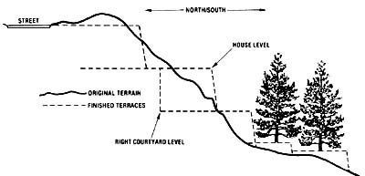
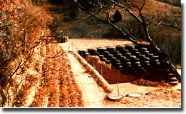
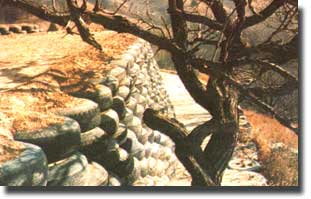
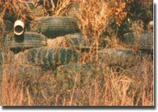
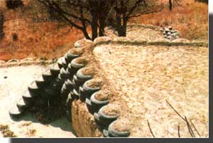
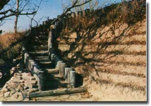

A little more than two years ago, I purchased a two-acre residential lot in the bluff country of Iowa. The price seemed quite reasonable, but the challenge presented by the lot was formidable! This particular piece of property, you see, lay crudely up a long, steep hillside. However, it did afford a marvelous view of the agricultural valley below, and of the skyline of Omaha, Nebraska, 16 miles away. My homesite was part of a newly developed subdivision ... and, though 42 lots were available, I chose to buy a sloping, south-facing site, because it offered a chance to fulfill my dream of a passive solar retirement home in scenic surroundings. The lot did, however, present two problems: Where would I put a house, and how could I make that house accessible?
The one and only exit from the nearby paved street onto my lot was a small, ill-shaped area just big enough-if it were level (and it wasn't)-to turn a car around in. Obviously, I had to do something ... but, since I had no money to spend on an elaborate rearrangement of the site's topography, I began to use a less costly resource: my brain. I drew countless house plans and spent endless hours climbing up and down the hillside, sitting here and there... trying to come up with a workable solution. Finally, like some sort of great vision, the parts of a plan for the lot fell into place.
I picked up my shovel and began what turned into a two-year "labor of love" . . . a task that took almost every evening, every weekend, and a month of vacation to complete. The lot's terrain was such that I couldn't get earth-moving equipment to the spot, so I was limited to using my body and an ordinary spade ... two 5-gallon plastic buckets for carrying dirt ... a saw ... and (over the two years) three pairs of sturdy work shoes.
First, I enlarged the sloping parking area adjacent to the street by leveling it off and reinforcing the southern edge, adding a 15-foot-wide band of level surface. In the beginning, that really was all I'd hoped to accomplish by myself, but-once the job was so satisfactorily finished-I couldn't stop. I felt that I'd just scratched the surface of what could-and should-be done. Again, I spent hours sitting and contemplating various possibilities, including the option of digging a basement by hand!
My original vision soon expanded to embrace the entire hillside, and I began to work even harder and more enthusiastically. The task became almost a way of life for me, as I felt I'd started something that only I could-or would-finish.
At the southern edge of the parking area (digging with the shovel), I terraced the slope sharply downward for 12 feet ... creating an earthen courtyard on each side of the ground level of my future home. Then in the "house" space between these courtyards, I dug down 12 feet again to excavate for a walkout basement, using the dirt to make another level terrace. (As I dug, I simply pitched the earth outward to the south ... expanding the level area as I worked.) The retaining wall for this courtyard rises approximately 12 feet above the beautiful, native meadow below, and two other terraces were later built in circular patterns around a pair of large oak trees at the base of my lot.
When my gigantic task was finally completed, the ugly, impossibly steep hillside had been transformed into an artful arrangement of six level areas connected by two flights of beautiful, rustic steps ... and awaited the erection of a home. Moreover, I believe it's got to be one of the most unusual and strongest building sites ever terraced by hand!
If you've ever had the opportunity to create exciting and useful things from other peoples'. castaways, you can likely understand my feeling of accomplishment. Though my project was executed with sweat and blood, you see, I couldn't have done the job without the help of a lot of used automobile tires! In fact, over the two-year period, I hauled 1,580 of them ... a few at a time, in a car ... over a distance of 16 miles ... and packed them in place by hand and foot.
Each tire holds approximately 25 gallons of earth, and-once filled with the solidly stomped-down dirt-becomes very heavy and almost impossible to move. As I placed the tires in more precarious areas, I "nailed" them to the ground with totally concealed metal rods or pipes. This resulted in staunch retaining walls which are seemingly impervious to weather conditions. In fact, the severe winter of 1981-82, followed-as it was-by a lengthy and heavy rainfall during the spring, caused absolutely no damage. I believe this is due, in part, to the drain system I built into each level, which disperses water into the meadow or timber below.
Better yet, my only expense turned out to be 17 bags of mortar mix (for building culverts) and 12 ten-foot lengths of 4" drainpipe. Everything else was free. The service station managers in my area thanked me for carting away their old tires. The metal rods were scavenged-with permission-from several building sites, and my staircases were made from old telephone poles that were delivered, again at no cost, by a local utility company. The many tons of large rocks used (to form a tree well and for general landscaping) were collected from the surrounding countryside and hauled, in my car, to the site.
In exchange for an expense of time and energy, I now have a priceless setting for my future home. Additionally, the terrace tires will provide perfect planting beds for trailing ground covers, flowers, and shrubs ... which will eventually spruce up the rather stark appearance of the walls. In fact, these castaways will someday become the basis for my own unique hanging gardens!
EDITOR'S NOTE: The author was so pleased with his tire terraces that he has put together an eight-page, illustrated pamphlet on how to build 'Everlasting Retainer Walls" under various conditions. You can order it by sending $2.50 to William Hogan, Dept. TMEN, Box 190, Crescent, Iowa 51526.
|
 PHOTOS BY THE AUTHOR The sheer scope of the work represented here would be impressive even if it weren't accomplished by a man who relied upon a passenger car and a shovel as his main tools! Note the drainage pipes |
 which were actual ly delivered, at no cost, by the local utility company ... and the interesting-though perhaps not long-lived, if the tree continues to grow- intermingling of limbs and tire wall |
 DISPERSE water to the meadow below the artificially created homesite . . . the use of scavenged telephone poles |
|
 |
 |
 |